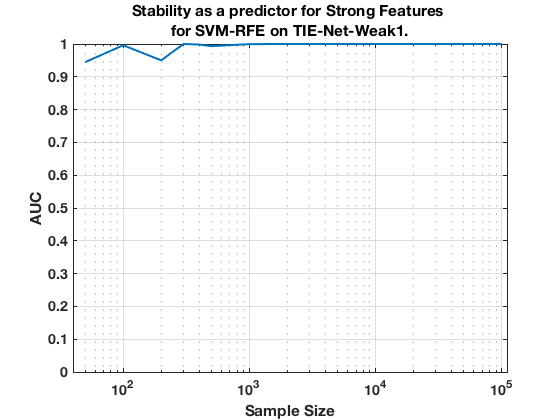

TIE-Net-Weak1. Summary. SVM-RFE.
summary_stability_type("MltNet", 2)
TOTAL COUNTS: Total=1327, Strong=23, Weak=1300, Irrelevant=4
Figure 85. Stability as a predictor for Strong Features for SVM-RFE on TIE-Net-Weak1.
______________________________________________________________________________________

Table 85. Breakdown of Stability by Feature Type for SVM-RFE.
______________________________________________________________
(1) Number Features Repeat (n_fs_rep): number of unique features that were selected in a repeat
(2) Number Features Fold (n_fs_fold): number of unique features that were selected in a fold
(3) Feature Stability ~ Feature Selection Frequency
Sample_Size All_n_fs_rep All_n_fs_fold All_Stability
___________ _______________________ _____________________ ___________________
' 50 ' ' 84.960 +/- 4.524 ' ' 9.524 +/- 0.482 ' ' 0.007 +/- 0.010 '
' 100 ' ' 111.440 +/- 6.641 ' ' 12.310 +/- 0.683 ' ' 0.009 +/- 0.011 '
' 200 ' ' 77.660 +/- 4.795 ' ' 9.492 +/- 0.525 ' ' 0.007 +/- 0.016 '
' 300 ' ' 138.560 +/- 6.571 ' ' 15.030 +/- 0.660 ' ' 0.011 +/- 0.019 '
' 400 ' ' 187.060 +/- 8.192 ' ' 24.124 +/- 1.175 ' ' 0.018 +/- 0.019 '
' 500 ' ' 93.880 +/- 5.720 ' ' 10.718 +/- 0.574 ' ' 0.008 +/- 0.020 '
' 1000 ' ' 105.840 +/- 6.502 ' ' 12.658 +/- 0.675 ' ' 0.010 +/- 0.025 '
' 2000 ' ' 30.220 +/- 0.581 ' ' 6.878 +/- 0.094 ' ' 0.005 +/- 0.038 '
' 5000 ' ' 39.680 +/- 0.437 ' ' 16.370 +/- 0.084 ' ' 0.012 +/- 0.079 '
' 10000 ' ' 42.340 +/- 0.558 ' ' 22.348 +/- 0.073 ' ' 0.017 +/- 0.110 '
' 100000 ' ' 44.600 +/- 0.414 ' ' 24.080 +/- 0.062 ' ' 0.018 +/- 0.123 '
Sample_Size Strong_n_fs_rep Strong_n_fs_fold Strong_Stability
___________ _____________________ _____________________ ___________________
' 50 ' ' 5.840 +/- 0.108 ' ' 1.098 +/- 0.018 ' ' 0.048 +/- 0.045 '
' 100 ' ' 7.260 +/- 0.128 ' ' 1.384 +/- 0.017 ' ' 0.060 +/- 0.064 '
' 200 ' ' 7.040 +/- 0.118 ' ' 1.554 +/- 0.019 ' ' 0.068 +/- 0.096 '
' 300 ' ' 10.400 +/- 0.162 ' ' 2.154 +/- 0.025 ' ' 0.094 +/- 0.112 '
' 400 ' ' 10.520 +/- 0.160 ' ' 2.388 +/- 0.032 ' ' 0.104 +/- 0.113 '
' 500 ' ' 8.500 +/- 0.125 ' ' 2.102 +/- 0.021 ' ' 0.091 +/- 0.128 '
' 1000 ' ' 10.720 +/- 0.141 ' ' 2.866 +/- 0.035 ' ' 0.125 +/- 0.148 '
' 2000 ' ' 15.800 +/- 0.132 ' ' 5.020 +/- 0.043 ' ' 0.218 +/- 0.189 '
' 5000 ' ' 22.120 +/- 0.043 ' ' 13.210 +/- 0.062 ' ' 0.574 +/- 0.170 '
' 10000 ' ' 22.800 +/- 0.019 ' ' 19.198 +/- 0.039 ' ' 0.835 +/- 0.100 '
' 100000 ' ' 23.000 +/- 0.000 ' ' 21.220 +/- 0.004 ' ' 0.923 +/- 0.177 '
Sample_Size Weak_n_fs_rep Weak_n_fs_fold Weak_Stability
___________ _______________________ _____________________ ___________________
' 50 ' ' 78.920 +/- 4.434 ' ' 8.406 +/- 0.468 ' ' 0.006 +/- 0.005 '
' 100 ' ' 103.820 +/- 6.524 ' ' 10.884 +/- 0.670 ' ' 0.008 +/- 0.003 '
' 200 ' ' 70.480 +/- 4.690 ' ' 7.924 +/- 0.510 ' ' 0.006 +/- 0.005 '
' 300 ' ' 127.860 +/- 6.452 ' ' 12.846 +/- 0.646 ' ' 0.010 +/- 0.006 '
' 400 ' ' 176.140 +/- 8.058 ' ' 21.686 +/- 1.146 ' ' 0.017 +/- 0.005 '
' 500 ' ' 85.220 +/- 5.621 ' ' 8.600 +/- 0.563 ' ' 0.007 +/- 0.003 '
' 1000 ' ' 94.880 +/- 6.410 ' ' 9.768 +/- 0.656 ' ' 0.008 +/- 0.003 '
' 2000 ' ' 14.420 +/- 0.536 ' ' 1.858 +/- 0.070 ' ' 0.001 +/- 0.006 '
' 5000 ' ' 17.560 +/- 0.437 ' ' 3.160 +/- 0.064 ' ' 0.002 +/- 0.016 '
' 10000 ' ' 19.540 +/- 0.561 ' ' 3.150 +/- 0.087 ' ' 0.002 +/- 0.013 '
' 100000 ' ' 21.600 +/- 0.414 ' ' 2.860 +/- 0.059 ' ' 0.002 +/- 0.011 '
Sample_Size Irrelevant_n_fs_rep Irrelevant_n_fs_fold Irrelevant_Stability
___________ ___________________ ____________________ ____________________
' 50 ' ' 0.200 +/- 0.014 ' ' 0.020 +/- 0.001 ' ' 0.005 +/- 0.001 '
' 100 ' ' 0.360 +/- 0.021 ' ' 0.042 +/- 0.002 ' ' 0.011 +/- 0.003 '
' 200 ' ' 0.140 +/- 0.013 ' ' 0.014 +/- 0.001 ' ' 0.004 +/- 0.002 '
' 300 ' ' 0.300 +/- 0.020 ' ' 0.030 +/- 0.002 ' ' 0.007 +/- 0.001 '
' 400 ' ' 0.400 +/- 0.024 ' ' 0.050 +/- 0.003 ' ' 0.013 +/- 0.001 '
' 500 ' ' 0.160 +/- 0.016 ' ' 0.016 +/- 0.002 ' ' 0.004 +/- 0.000 '
' 1000 ' ' 0.240 +/- 0.019 ' ' 0.024 +/- 0.002 ' ' 0.006 +/- 0.000 '
' 2000 ' ' 0.000 +/- 0.000 ' ' 0.000 +/- 0.000 ' ' 0.000 +/- 0.000 '
' 5000 ' ' 0.000 +/- 0.000 ' ' 0.000 +/- 0.000 ' ' 0.000 +/- 0.000 '
' 10000 ' ' 0.000 +/- 0.000 ' ' 0.000 +/- 0.000 ' ' 0.000 +/- 0.000 '
' 100000 ' ' 0.000 +/- 0.000 ' ' 0.000 +/- 0.000 ' ' 0.000 +/- 0.000 '